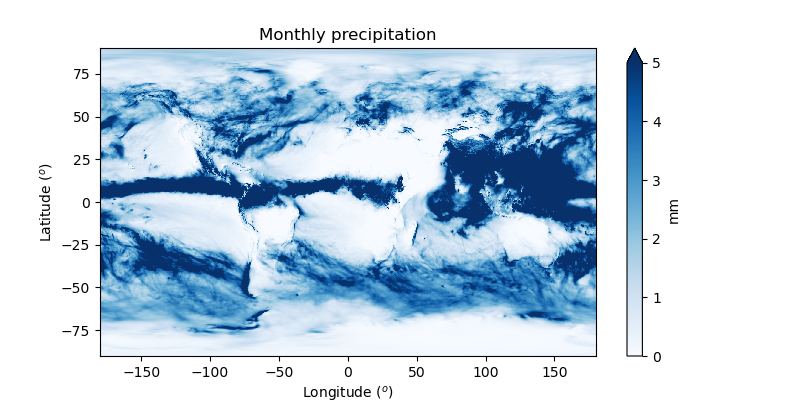

Assignment #06#
NumPy and Matplotlib are two fundamental pillars of the scientific Python stack. You will find numerous tutorials for both libraries online. You can learn the basics of both tools by yourself, at the pace that suits you, e.g., with the following two tutorials:
They can be quite long if you are new to NumPy and you do not need to go through them all today. Sections 1.4.1.1 to 1.4.1.5 in the NumPy tutorial should give you enough information for today’s assignments, or you can try without it and learn on the fly - your choice!
Exercise #06-01: Indexing#
Given a 2D NumPy array defined as:
import numpy as np
x = np.array([[1, 2, 3],
[4, 5, 6]])
The following indexing operations all select the same values out of the array:
x[:, 1]x[slice(0, 2, 1), 1]x[(slice(0, 2, 1), 1)]x[slice(0, 2, 1), slice(1, 2, 1)]x[..., 1]x[::1, 1]x[[0, 1], 1]x[:, -2]x[:, 1:2]x[:, [1]]
This can be checked with the following test:
from numpy.testing import assert_equal
ref = 7
assert_equal(ref, x[:, 1].sum())
assert_equal(ref, x[..., 1].sum())
assert_equal(ref, x[::1, 1].sum())
assert_equal(ref, x[slice(0, 2, 1), 1].sum())
assert_equal(ref, x[(slice(0, 2, 1), 1)].sum())
assert_equal(ref, x[slice(0, 2, 1), slice(1, 2, 1)].sum())
assert_equal(ref, x[[0, 1], 1].sum())
assert_equal(ref, x[:, -2].sum())
assert_equal(ref, x[:, 1:2].sum())
assert_equal(ref, x[:, [1]].sum())
Questions:
What is the
...syntax doing? Again, it is the literal equivalent of an actual Python object: which one?Some of these indexing operations are truly equivalent to the “obvious” one,
x[:, 1]. List them.Classify these operations (i) into basic and advanced operations, and (ii) by the shape of their output. Explain.
If you would like the array
a = x[:, 1:2]to have a shape of (2, ) like most of the other operations listed above, how can you reshape it?
Hint: Take also a look at the NumPy documentation about indexing.
Exercise #06-02: Average temperature#
A dataset of monthly temperature averages for Innsbruck airport between 1960 and 2024 was prepared using data from the GeoSphere Austria Data Hub (dataset Messstationen Monatsdate). The dataset can be downloaded from this lecture’s github via:
from urllib.request import Request, urlopen
import json
url = 'https://raw.githubusercontent.com/manuelalehner/scientific_programming/master/data/innsbruck_temp.json'
req = urlopen(Request(url)).read()
inn_data = json.loads(req.decode('utf-8'))
Explore the inn_data variable. What is the type of “inn_data”, and of the data it contains?
Convert the data series to NumPy arrays.
Using NumPy/SciPy, Matplotlib, and the standard library only, compute and plot the mean monthly annual cycle of temperature for 1991-2020 and the mean annual temperature timeseries for 1960-2024.
Compute the linear trend (using scipy.stats.linregress) of the average annual temperature over the period 1960-2024.
Repeat for the winter (DJF) and summer (JJA) trends.
Tip 1: to select part of an array (indexing) based on a condition, you can use the following syntax:
import numpy as np
x = np.arange(10)
y = x**2
y[x > 4] # select y based on the values in x
array([25, 36, 49, 64, 81])
Tip 2: there is more than one way to compute the annual and monthly means. Some use loops, some use reshaping of the original 1D array.
Exercise #06-03: Plotting gridded data#
ERA5 is the global reanalysis product of ECMWF from 1940 to the present. For this exercise we are using monthly averaged daily precipitation for July 2025. You can download the dataset and retrieve the variables using the code snippet below.
Note: You need to install the netcdf4 package for this exercise.
import requests
import netCDF4 as nc
url = 'https://raw.githubusercontent.com/manuelalehner/scientific_programming/master/data/era5_precip_july2025.nc'
ds = nc.Dataset('era5_data', memory=requests.get(url).content)
precip = np.array(ds['tp'][0,:,:])
lon = np.array(ds['longitude'][:])
lat = np.array(ds['latitude'][:])
ds.close()
Since the longitudes range from 0 to 360°, the data have to be rearranged to produce a plot centered around Europe and Africa. Try to create a plot similar to the one below.
Now highlight (you decide how) the areas with precipitation below 1 mm/day and above 10 mm/day.